SAVE THE PLANET
Single Use Plastic
Grocery Bags, July 30, 2019
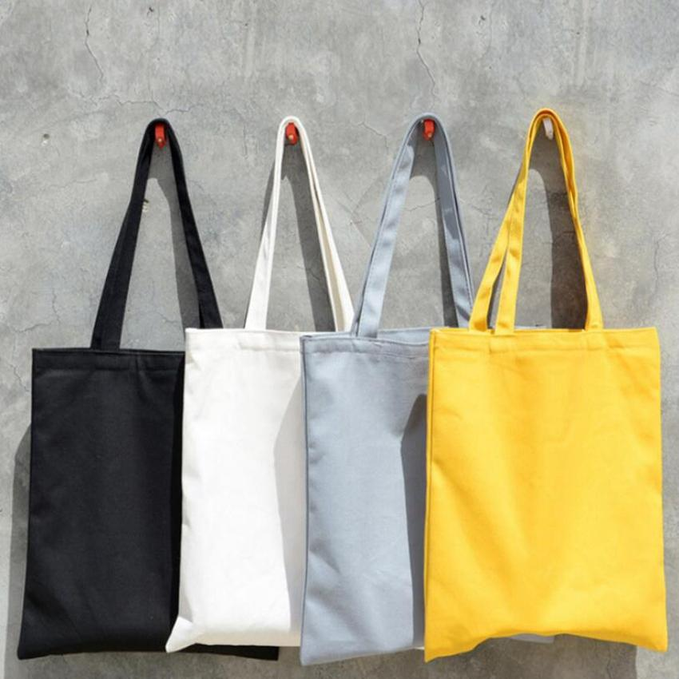It takes more than 500 years for a plastic bag to degrade in a landfill. Unfortunately the bags don't break down completely but instead photo-degrade, becoming microplastics that absorb toxins and continue to pollute the environment. Fish and sea turtles often mistake these bags for jellyfish or for food and will often eat it. This can cause terrible damage to our ecosystem.
Plastic Cups, July 30, 2019
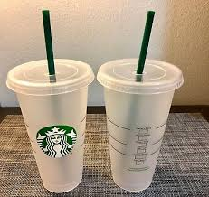If you enjoy getting a coffee or iced tea every day, replace the daily plastic cup with a reusable cup. Starbucks uses more than 8,000 paper cups a minute, which adds up to more than four billion a year. It is estimated that by 2050, there will be more plastic cups in our ocean than fish. Starbucks offers a 10 cent discount on your drink if you bring your own reusable cup and you protect the environment at the same time.
Produce Bags, July 30, 2019
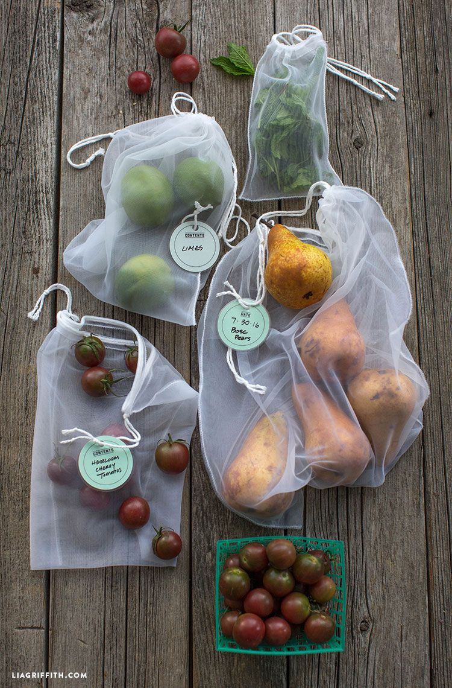You can buy reusable produce bags for about $1 each. Produce bags are similar to plastic bags as they take hundreds of years to partially biodegrade. Instead of putting your fruit in a plastic bag that will be used for a maximum of an hour, use a reusable bag and get hundreds of uses.
Utensils and Straws, July 30, 2019
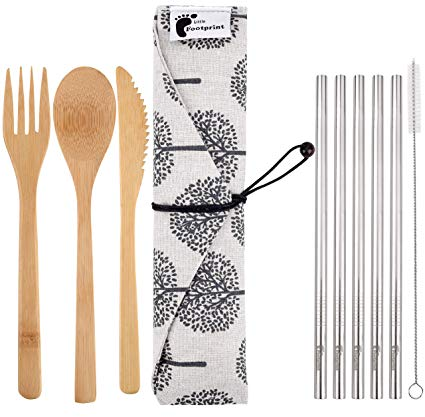Straws and utensils are unlike some other single use plastics, as it can not be recycled at all. Plastic straws are small enough where it could be digested by bids, fish, or sea turtles. Although straws are not necessary, if you like to use straws consider using bamboo or metal straws. They are portable and small enough to carry it in your bag. Instead of using a plastic fork once and then tossing it in the trash can, you can carry around a bamboo or metal set/
Food
Vegan, Sep 2, 2017

A vegan is an individual who does not eat any meat or animal products. Animal products include, but are not limited to, honey, milk, eggs, gelatin, and lard. There are many health and environmental benefits to being vegan, but you must make sure you become a vegan in a healthy manner.
Vegetarian, Sep 2, 2017
A vegetarian is an individual who does not eat any meat but can eat animal products. There are some vegetarians who eat fish while others do not. Being vegetarian can reduce your carbon footprint.
Transportation
Bike, Sep 2, 2017
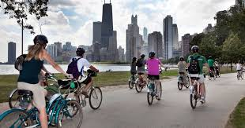Biking is environmentally friendly as it can reduce emission pollution and noise pollution. A bike does not require gasoline, therefore having zero to no emission pollution. It also does not require any of liquids such as antifreeze that can be harmful to the environment.
Bus, Sep 2, 2017
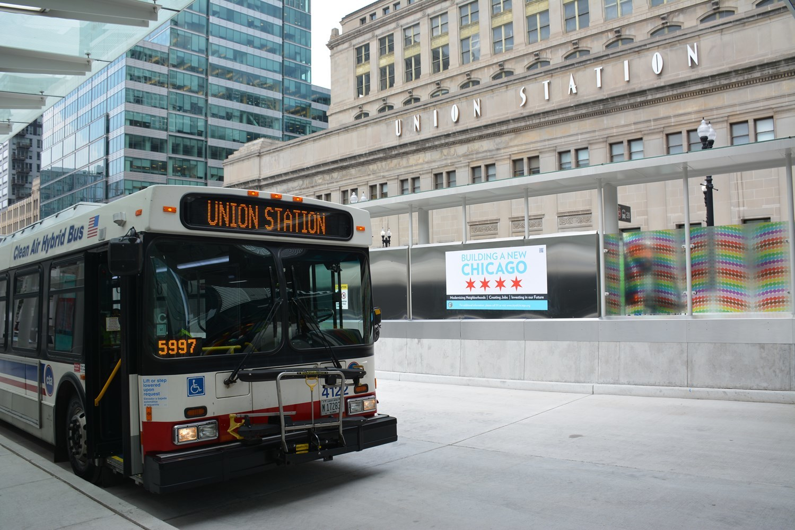According to the National Express Transit, “Buses emit 20% less carbon monoxide, 10% as much hydrocarbons, and 75% as much nitrogen oxides per passenger mile than an automobile with a single occupant.” Public transportation is more eco-friendly than driving a car as it can carry more people at a time.
Train, Sep 2, 2017
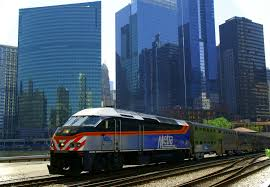If possible, take the train to work instead of driving. Not only will you save money that you would have spent on parking, but it lowers carbon emissions. Trains also use less energy per mile than a car would.
Vote
Petitions, Sep 2, 2017
Protect Vulnerable Wildlife from Extinction!
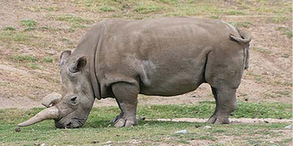“Wildlife is in big trouble. Last month, hundreds of international experts released a devastating report: As many as a million species of plants and animals are in danger of extinction, some within the next decade.” https://www.thepetitionsite.com/takeaction/186/719/447/
Protect the Ocean from the Threat of Offshore Drilling
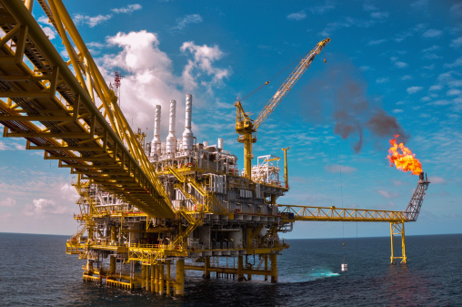“The Trump oil and gas plan has suffered a major setback. Instead of forging ahead with a new five-year offshore oil and gas plan that aimed to open up almost all of America's coastline to risky offshore drilling—the new Secretary of the Interior, David Bernhardt, announced this plan would be delayed indefinitely. While this is very good news—we need to stay vigilant! Let's use this time to build support for Congressional action that will protect important and sensitive ocean areas.” https://www.thepetitionsite.com/takeaction/837/911/603/
In the United Kingdom, Farmers Can Legally Feed Their Animals Plastic
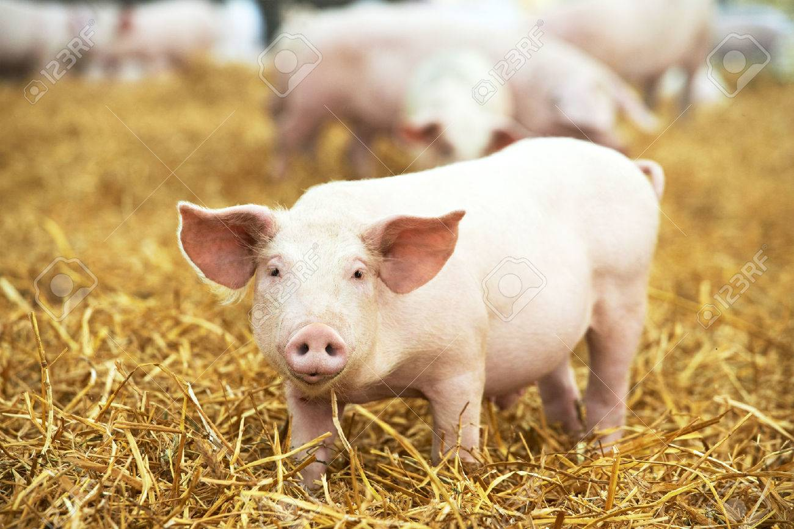The United Kingdom mad cow scare is long over but if today's cattle knew what their farmers were feeding them you would have some pretty bitter bovine. That's because in the U.K. up to 0.15% of plastic is allowed to go into feed for animals destined for human consumption. As the Guardian reports: "More than 650,000 tonnes of unused food, from loaves of bread to Mars bars, are saved from landfill each year in the UK by being turned into animal feed." This food is often still packaged when it goes through the recycling process as it is turned into animal feed. And because the machinery used to strip the unwanted food from its plastic wrapping isn't able to separate 100% of the plastic, the Food Standards Agency permits feed to contain a part of the material. https://www.thepetitionsite.com/107/005/038/in-the-united-kingdom-farmers-can-legally-feed-their-animals-plastic/
Bills, Sep 2, 2017
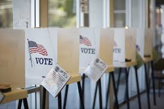H.R.2349 - Climate Change Education Act
Introduced in House (04/22/2019) Climate Change Education Act
This bill declares that the evidence for human-induced climate change is overwhelming and undeniable. The National Oceanic and Atmospheric Administration (NOAA) must establish a Climate Change Education Program to increase the climate literacy of the United States by broadening the understanding of human-induced climate change, including possible consequences and potential solutions; apply the latest scientific and technological discoveries to provide learning opportunities to people of all ages; and help people understand and promote implementation of new technologies, programs, and incentives related to climate change, climate adaptation and mitigation, and climate resilience. NOAA must also establish a grant program for climate change education.
Recycling
What You Can Recycle, Sep 2, 2017
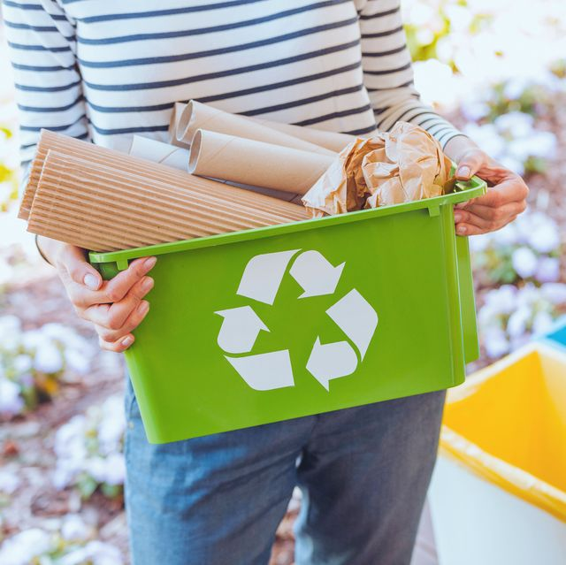Plastic, bottles, containers, cardboard boxes, phone books, magazines, tin, aluminum, steel cans, glass
What You Can't Recycle, Sep 2, 2017
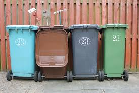Styrofoam, bubble wrap, cords, grocery bags, batteries, pizza boxes, cleaning products, scrap woods
Clothing, Sep 2, 2017
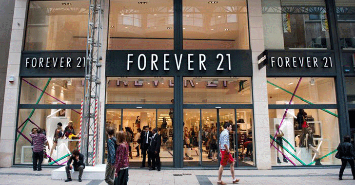Don’t buy clothing from fast fashion stores such as Forever 21, H&M, and FashionNova! These are fast fashion stores that produce low quality pieces in a quick time span in order to sell them to their customers. They are made to only last a short time and have to be replaced quickly. In producing clothing quickly, it adds to water pollution and environmental destruction.
About Me
Some text about me in culpa qui officia deserunt mollit anim..
Follow Me
Add me on LinkedIn at linkedin.com/in/cindy-amezquita-307925175